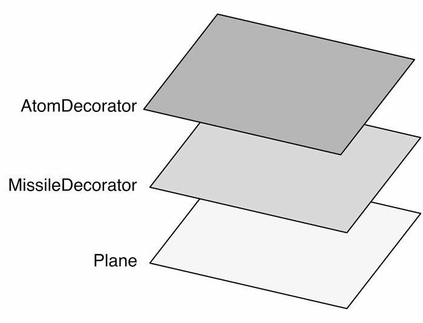

在《设计模式》成书之前，GoF原想把装饰者（decorator）模式称为包装器（wrapper）模式。
从功能上而言，decorator能很好地描述这个模式，但从结构上看，wrapper的说法更加贴切。装饰者模式将一个对象嵌入另一个对象之中，实际上相当于这个对象被另一个对象包装起来，形成一条包装链。请求随着这条链依次传递到所有的对象，每个对象都有处理这条请求的机会，如图15-2所示。

图 15-2